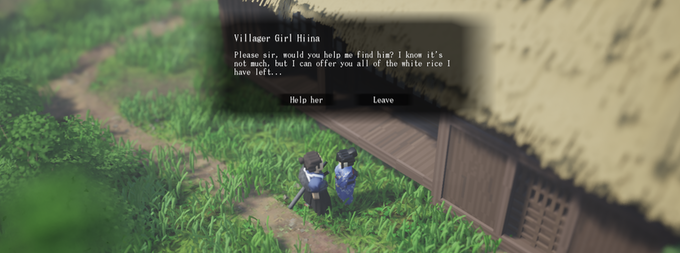

Rōnin Trail
Rōnin Trail is an open-world adventure game about a wandering samurai searching for his purpose. You play as a survivor of war who must take on odd jobs and bounties to make a living. The game takes place at the start of the Edo period in Japan, shortly after the country was ravaged with war. As you travel through the countryside, chaos persists as disbanded soldiers form violent gangs that terrorize the villagers. It's up to you to bring peace back to the valley.
Combat

Combat is skill-based and fluid. There are many subtle techniques to master in combat. Attack animations are procedurally blended together, allowing for greater flexibility and freedom. As you master the combat system, you'll learn hidden mechanics like sword bashing, back-stepping, and unique sword skills, and stances. Each stance has varying attack timings and special attributes which you'll learn to utilize in different situations. Every stance has custom-made poses and animations which are based on real life kendo and kenjutsu techniques. As you gain experience, you'll be able to level up your skills to bolster defense or increase dexterity.
Lethal Tempo
Fights are brutal and grotesque with blood and dismemberment. Straying away from an arcade style of gameplay, Rōnin Trail's combat aims to be realistic. Strikes feel meaty and lethal while the blood interactive system helps to convey a sense of realism. Just as in a real fight, most skirmishes can end in a single strike given the proper timing and distance. The player and foe must be on their toes at all times. One mistake can mean certain death!

Open World
Explore an environment brimming with life. Rōnin Trail features a small but lively open world with a variety of flora and fauna. On your journey, you'll come across various species of beetles and cicadas in the trees, as well as fish and frogs in the water. You'll be able to capture unique bugs and critters with your bug net and fishing pole. A critter logbook is planned to be added so you can record unique species you find on your travels.
Inventory
Pack your bag and set off on an adventure into the valley with your trusty katana and short sword at your side. You'll be able to organize your inventory, manage equipment, and view your logbook from your interactive storage bag system.
Oh The Places You'll Go...
Discover interesting places on your journey through the countryside. You'll travel through unique biomes, from misty forests and wind-beaten grasslands to bamboo groves and humid swamps. Visit moss covered shrines or enchanting pagodas hidden deep in the forest. Equip yourself with thicker clothing to survive in the cold as you travel north towards snowy mountains.

Survival
Survive off the land by fishing for trout and foraging for mushrooms. Combat is not the only brutal part of Rōnin Trail's world - you'll need to learn to survive on your own. In order to stave off hunger, you'll have to identify which mushrooms are edible and find the best spots to fish for trout. You can gather dry wood in the forest and build a campfire to cook your meals. Your condition affects your aptitude in battle as well. Hunger will affect your health regeneration while your thirst affects your stamina recovery. It's important to fuel up before a big fight!
Story Telling
Choose-your-own-adventure style of story telling allows you to choose what side quests and stories to pursue. As a free spirited ronin, you won't feel bound to follow a single storyline, rather you'll have the freedom to do whatever you like—whether it's helping a lost girl find her family or working with the local militia to drive out encroaching bandit forces. You can choose to become a cut-throat bounty hunter or help the village elder find herbs for medicine. Rise in fame as you slay tougher and more notorious foes. Be good enough and you might be recruited by an underground organization of hunters...
Customization
Customize your character with clothing, hats, and dyes you find on your journey. Collect straw "kasa" hats from the dueling ronin you encounter or purchase new outfits from traveling merchants. A dye system is planned where you can create your own pigments and patterns from beetles and herbs for almost endless combinations of clothing!